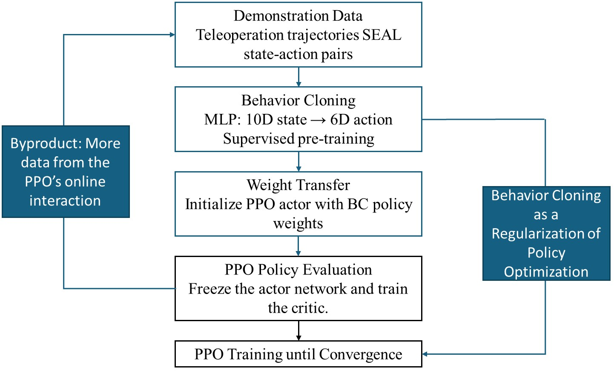

A Reinforcement Learning Approach for Table Tennis Robot Serve
Abstract
This project investigates simulation-based policy learning for table tennis robot serving using NVIDIA Isaac Sim. We first construct an ITTF-standard simulation environment with a UR10 robot arm and verify its feasibility by implementing the SEAL (Sample-Efficient Adjustment-Learning, Guo et al., ICRA 2025) algorithm inside the simulator, which produces a Behavior Cloning (BC) baseline policy. The serving task is then formulated as a sequential decision-making problem: at each sub-step the agent observes a 10-dimensional state (current paddle pose and ball landing feedback) and outputs a 6-dimensional residual action (position and orientation delta), trained with Proximal Policy Optimization (PPO) and a reward function based on legal landing accuracy.
Starting from the verified Isaac Sim environment, we branch into two training strategies: (1) RL after Supervised Learning, where the PPO actor is initialized directly from SEAL's MLP weights and fine-tuned with PPO, and (2) RL from Scratch, where PPO is trained from random initialization without any prior. The SEAL policy serves as the performance baseline for both. Training results show that RL from Scratch achieves modest but stable convergence, while RL after Supervised Learning becomes unstable after the pre-trained weights are unfrozen, failing to improve beyond the SEAL baseline. These findings suggest that naive PPO fine-tuning on top of a BC-initialized policy does not reliably outperform training from scratch under the conditions studied.
Simulation Environment
All experiments in this project are conducted in NVIDIA Isaac Sim, a physics-based robotics simulation platform. The table dimensions, net height, and ball properties are set to match ITTF (International Table Tennis Federation) specifications, providing a standardized physical setup for training and evaluation.
The robot used is a Universal Robots UR10, a 6-DOF industrial manipulator. A table tennis paddle is attached as the end-effector, and the arm is positioned at one end of the table. The coordinate frame is aligned with the table surface: the X and Y axes lie in the table plane, and Z points upward, as shown in the figure below.

Figure 1: Simulation setup in Isaac Sim — UR10 robot arm with paddle end-effector and an ITTF-standard table. The coordinate axes (X, Y, Z) are defined relative to the table surface.
Method Overview
The overall approach proceeds in five stages, each described in more detail in the sections that follow.
- Environment Setup. A UR10 robot arm with a paddle end-effector is placed in an Isaac Sim environment modeled to ITTF specifications. The simulator provides rigid-body physics, contact dynamics, and ball flight.
- SEAL Baseline. We implement the SEAL algorithm (Guo et al., ICRA 2025) inside Isaac Sim to verify that the simulation environment correctly supports the table tennis serving task. The resulting trained MLP serves as our supervised baseline policy (Behavior Cloning checkpoint) against which all RL results are compared.
- RL Problem Formulation. The serving task is cast as a sequential decision-making problem. The agent observes a 10-dimensional state (current paddle pose and ball landing feedback) and outputs a 6-dimensional residual delta action (position + orientation offset), rewarded by legal landing accuracy. Details are given in the Reinforcement Learning Framework section.
-
Strategy A — RL after Supervised Learning (BC → PPO).
BC weights are transferred into the actor only
(
policy_net+action_net); the critic (value_net) is randomly initialized. During a 1,000-step warm-up the actor is frozen while the critic trains from scratch to establish a value baseline. PPO then fine-tunes both networks freely. This tests whether the BC prior accelerates convergence beyond the SEAL baseline. - Strategy B — RL from Scratch. PPO is trained from random initialization with no prior knowledge, serving as the pure RL reference point. Both strategies share the same hyperparameters, state/action space, and reward function.
Reference Work: SEAL
A primary reference for this project is SEAL: A Sample-Efficient Adjustment-Learning Method for Table Tennis Robot Serve (Guo et al., ICRA 2025 · IEEE Xplore · video). SEAL is an independent prior work developed by a Japanese research laboratory. It proposes a sample-efficient method for training a real-world table tennis serving robot, using physical hardware and real ball-flight trajectories. SEAL is not a simulation-based method; all of its experiments are conducted on a real robot in the real world.
Our project takes SEAL as a starting point in two ways. First, we adapt SEAL's task definition — a UR10 arm serving a ball to the opposite half of an ITTF-standard table — and deploy this task inside NVIDIA Isaac Sim to verify that a physics-based simulation environment can support the serving scenario as a training platform. This simulation deployment is one of our own contributions. Second, the end-effector teleoperation trajectories from SEAL serve as demonstration data for the Behavior Cloning pre-training stage in our Strategy B (RL after Supervised Learning).
The videos and figure below are taken directly from SEAL's original real-world results and are included here solely as reference material. They are not results produced by this project.
Isaac-based verification of a table tennis serving algorithm. (Guo et al., ICRA 2025).
End-effector teleoperation for demonstration data collection in SEAL (real-world hardware). These trajectories are reused as Behavior Cloning training data in our Strategy B.

Ball landing distribution from SEAL's real-world 6-DOF serving experiments (reproduced from Guo et al., ICRA 2025). Included as a reference for the serving task definition and target landing zone.
Reinforcement Learning Framework
Both strategies share the same Isaac Sim environment, state space, action space, and reward function, but use different RL algorithms and network initializations. Strategy A uses PPO (on-policy, stochastic policy) initialized from a BC checkpoint; Strategy B uses TD3 (off-policy, deterministic policy) trained entirely from random initialization.
Strategy A — RL after Supervised Learning (BC → PPO)
Network Initialization
MLP architecture: 160 → 300 → 300 → 80
(log_std_init = −2.0).
Actor only (policy_net + action_net)
is loaded from the BC checkpoint.
Critic (value_net) is
randomly initialized.
First 1,000 steps: actor frozen, critic trains alone to warm up the value baseline.
Then both networks fine-tune freely via PPO.
State Space (10D)
| Dim | Feature | Description |
|---|---|---|
[0:3] | ref_pos | Paddle face position (x, y, z) in m |
[3:6] | ref_euler | Paddle orientation (roll, pitch, yaw) in rad |
[6:8] | landing_xy | Last ball landing position (x, y) |
[8:10] | target − landing | 2D error to target landing point |
Orientation composed internally as quaternions; Euler used only for observation.
Action Space (6D) — Residual Pose Correction
| Dim | Feature | Physical bound |
|---|---|---|
[0:3] | delta_pos | ±0.05 m per axis |
[3:6] | delta_euler | ±[0.18, 0.22, 0.30] rad (r, p, y) |
Normalized [−1, +1] → rescaled to physical units. Orientation delta applied via quaternion multiplication; result passed to Lula IK solver.
Strategy B — RL from Scratch
Algorithm — PPO from Scratch
Same Proximal Policy Optimization (PPO) algorithm as Strategy A,
but with fully random initialization — no BC checkpoint is loaded.
Policy architecture: 256 → 256 → 256 MLP
(log_std_init = −2.0), shared for both actor (pi)
and critic (vf).
An optional BC auxiliary loss can be enabled alongside PPO:
after each rollout update, n_epochs additional gradient steps
minimize bc_coef × MSE(π_mean(s_demo), a_demo) on CSV demo pairs,
anchoring the policy mean toward demonstrated actions without changing
log_std. Setting --bc-coef 0 gives plain PPO.
Network Initialization
All weights randomly initialized — no BC checkpoint is used. Actor and critic share the same 256 → 256 → 256 trunk.
State Space (10D) — same as Strategy A
| Dim | Feature | Description |
|---|---|---|
[0:3] | ref_pos | Paddle face position (x, y, z) in m |
[3:6] | ref_euler | Paddle orientation (roll, pitch, yaw) in rad |
[6:8] | landing_xy | Last ball landing position (x, y) |
[8:10] | target − landing | 2D error to target landing point |
Action Space (6D) — same as Strategy A
| Dim | Feature | Physical bound |
|---|---|---|
[0:3] | delta_pos | ±0.05 m per axis |
[3:6] | delta_euler | ±[0.18, 0.22, 0.30] rad (r, p, y) |
Normalized [−1, +1] → rescaled to physical units. Pose composed via quaternion multiplication; passed to Lula IK solver.
Reward Function — Shared by Both Strategies
Each episode consists of up to 5 sub-steps targeting the same landing point, allowing the policy to iteratively refine its serve. The reward at each sub-step is:
\(r = r_{\text{status}} + r_{\text{action}}\)
- Legal serve reward (dense): when the ball lands legally on the opponent's half, \(r_{\text{status}} = 2 - \lVert\text{landing} - \text{target}\rVert_2\).
- Illegal penalty (sparse): \(r_{\text{status}} = -5.0 \times f\), where \(f = 1.2\) for a complete miss and \(f = 0.05\) for insufficient bounces or indeterminate outcomes.
- Action regularization (optional): \(r_{\text{action}} = -w \cdot \lVert a \rVert^2\), penalizing large residual corrections to discourage unnecessary pose drift.
System Architecture
Both strategies share the same Isaac Sim simulation environment but differ in their observation space, action representation, and low-level controller.
Strategy A — BC → PPO
Isaac Sim
Physics simulator · Ball + robot dynamics
Observation (10D)
ref_pos (3D) + ref_euler (3D)
landing_xy (2D) + error (2D)
Policy MLP (BC-init)
PPO actor–critic
Outputs delta action (6D)
Pose Controller
Rescale → pos += Δpos
quat ⊗ Δquat → euler
→ Lula IK solver
Figure 2a: Strategy A data flow.
At each sub-step, Isaac Sim returns a 10D observation (paddle pose + landing
feedback). The BC-initialized actor outputs a 6D residual delta, which is
rescaled and composed via quaternion multiplication onto the current reference
pose before being passed to the Lula IK solver.
Episodes consist of up to 5 sub-steps; once
n_steps × num_envs transitions are collected, PPO runs
mini-batch gradient descent on the rollout buffer.
Strategy B — RL from Scratch
Isaac Sim
Physics simulator · Ball + robot dynamics
Observation (? D)
[ To be filled ]
Policy MLP (random init)
PPO actor–critic (256×3)
Outputs delta action (6D)
Pose Controller
Rescale → pos += Δpos
quat ⊗ Δquat → euler
→ Lula IK solver
Figure 2b: Strategy B data flow — identical pipeline to Strategy A, but with a randomly-initialized PPO actor.
The data-flow pipeline is identical to Strategy A: same 10D observation, same 6D residual delta action, same Pose Controller and Lula IK solver. The only difference is the policy is a randomly-initialized 256 → 256 → 256 MLP trained by PPO with no BC warm start. An optional BC auxiliary loss on CSV demo pairs can be co-applied alongside PPO updates.
Training Pipeline
To investigate the role of prior knowledge in RL-based serving, we design and compare two training strategies that share the same PPO loop, state space, action space, and reward function, but differ in how the policy is initialized.
Strategy A — RL after Supervised Learning (BC → PPO)
- Demonstration data collection via SEAL teleoperation — legal serve state-action pairs recorded as (ref_pos, ref_euler, landing_xy, error) → (delta_pos, delta_euler)
- Behavior Cloning (BC): MLP (160 → 300 → 300 → 80) trained on state-action pairs via supervised regression
-
Weight transfer — Actor only: BC weights loaded into
policy.mlp_extractor.policy_net(trunk) andpolicy.action_net(output head). Critic (value_net) remains randomly initialized. No BC loss is added at any point. - Critic warm-up (~1,000 steps): actor frozen, only the randomly-initialized critic is trained to build a stable value baseline
- PPO fine-tuning: actor unfrozen, standard PPO update loop trains both actor and critic freely
BC provides actor initialization only — a one-time warm start. The critic is always trained from scratch, and PPO fine-tunes both networks freely with no BC regularization term.
Strategy B — RL from Scratch (PPO)
- Random policy initialization — 256 → 256 → 256 MLP,
log_std_init = −2.0, no BC weights loaded - PPO rollout collection:
n_steps = 40sub-steps per env × 6 parallel envs - PPO update:
n_epochs = 10passes,batch_size = 128,ε = 0.2 - (Optional) BC auxiliary loss: after each PPO update,
n_epochsgradient steps minimizing0.5 × MSE(π_mean(s_demo), a_demo)on CSV demo pairs — set--bc-coef 0for plain PPO - Repeat until convergence
No BC initialization. The policy explores the action space from random weights. The optional BC auxiliary loss provides a soft demo anchor during training without loading any checkpoint weights.
Strategy A — BC → PPO Pipeline

Figure 4a: Strategy A — SEAL data → BC pre-training → actor weight transfer → critic warm-up → PPO fine-tuning.
Note on diagram labels
"Behavior Cloning as Policy Initialization" — BC weights are a one-time warm start; no BC loss during PPO training.
"Byproduct" — PPO collects new on-policy rollouts, replacing the static BC dataset with live interaction data.
Strategy B — RL from Scratch Pipeline
Figure 4b: Strategy B — random init → PPO rollout → PPO update (+optional BC aux loss) → repeat.
Both strategies use the same PPO hyperparameters:
lr = 3×10−4, γ = 0.99,
λ = 0.95, ε = 0.2,
n_steps = 40, n_epochs = 10,
batch_size = 128, log_std_init = −2.0.
They differ in network architecture (A: 160→300→300→80 from BC; B: 256→256→256 random)
and initialization strategy (A: BC warm start + critic freeze; B: fully random,
optional BC auxiliary loss).
The key experimental question is whether BC initialization provides a useful
warm start that PPO can build upon, or whether it introduces instability that
prevents further improvement. The results of this comparison are presented in the following section.
Testing Procedure
After training, each policy is evaluated by serving the ball toward a designated target landing point \(P_{\text{tar}}\). The two strategies differ in how the state is updated between successive attempts.
Strategy A — Iterative Error Update (SEAL-style)
The reference robot state \(S_0\) stays fixed throughout all attempts. Only the error term \(\Delta\) is updated after each serve based on the observed landing deviation:

Each iteration the network receives \((S_0,\ P_0,\ \Delta_{i})\) and outputs \(\Delta S\), producing the next robot state \(S_0 + \Delta S\). The policy converges toward \(P_{\text{tar}}\) without ever changing the reference pose.

Strategy B — Rolling State Update
After each serve, the actual landing position becomes the new reference state for the next attempt. Both the robot state \(S_t\) and landing point \(P_t\) roll forward:
The distance \(d_t = \|P_t - P_{\text{tar}}\|\) shrinks as the policy steers successive landing positions toward the target.

Results
We compare two training conditions over approximately 16,000 environment timesteps: RL after Supervised Learning (blue), in which the PPO actor is initialized with weights from a Behavior Cloning pre-trained policy, and RL from Scratch (orange), in which PPO is trained from random initialization without any prior demonstration data.
In the RL after Supervised Learning condition, the actor weights (initialized from BC) were frozen during an initial ~1,000-step warm-up phase while only the randomly-initialized critic was updated. After the actor freeze is released at approximately the 3k timestep mark, both the mean episode reward and the mean episode length drop sharply. The reward falls below zero and does not recover throughout the remaining training budget, suggesting that the PPO update destabilizes the pre-trained policy rather than improving it. The RL fine-tuning stage did not converge to a stable or better-performing serving behavior.
In contrast, RL from Scratch starts with no prior knowledge of the task but exhibits a gradual upward trend in mean episode reward from the beginning of training. The reward stabilizes at approximately 3.0–3.5 after around 4k timesteps and remains at that level for the rest of training. Nevertheless, the final converged reward does not exceed the initial reward observed in the supervised pre-trained policy before fine-tuning began.
Overall, these results indicate that neither training strategy produces a policy that outperforms the original SEAL approach. The RL fine-tuning phase failed to leverage the supervised initialization effectively, while RL from scratch converges to a lower reward ceiling. The findings highlight the difficulty of applying standard PPO fine-tuning on top of imitation-learned policies and motivate further investigation into more stable warm-starting strategies.

Figure 3a: Mean episode reward (ep_rew_mean) over training timesteps.

Figure 3b: Mean episode length (ep_len_mean) over training timesteps.
Demo Video
Demo video will be added after the final experiment recording is available.
A recorded rollout of the trained serving policy in the simulation environment.
Project Materials
The full project report will include detailed descriptions of the environment design, hyperparameter choices, ablation studies, and discussion of limitations.
Project report will be added after the final submission is completed.
Acknowledgement
This work was completed as a Reinforcement Learning final project at National Yang Ming Chiao Tung University. We thank the course instructors and teaching assistants for their guidance and feedback throughout the project.
Citation
@misc{cheng2026tabletennis,
title = {A Reinforcement Learning Approach for Table Tennis Robot Serve},
author = {Li-Yi Chang and Ting-Yu Song and Po-Chuan Chiou and Ying-Hsien Cheng and Hung-Yu Chen},
year = {2026},
note = {Reinforcement Learning Final Project, National Yang Ming Chiao Tung University},
url = {https://github.com/110611074/table-tennis-robot-project-page}
}